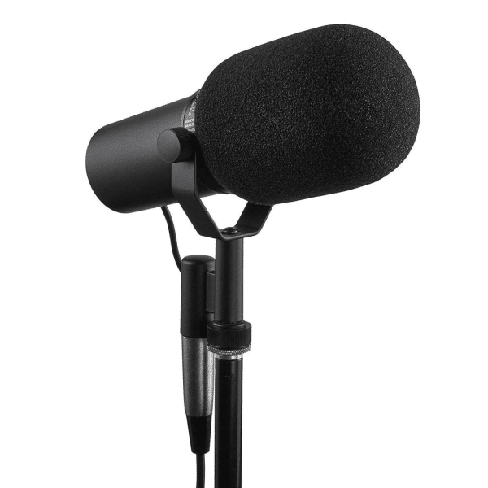

← All Guides
Best XLR Microphone Kit for Streaming 2026: What 4 Reviewers Agree On
Aggregated from 4 YouTube reviews · Updated 2026-10-03

Shure SM7B
Recommended by 2 of 4 reviewers — Podcastage's daily driver after 6 years of use and the broadcast standard: warm tone with superb background-noise rejection.
📊 Quick Comparison
| # | Product | Recommended By | Best For | Price |
|---|
| 1 | Shure SM7B | 2/4 reviewers | Serious streamers and podcasters | $349-399 |
| 2 | Rode PodMic | 2/4 reviewers | Budget broadcast sound | $99-149 |
| 3 | Maono PD200W | 1/4 reviewers | Hybrid USB+XLR beginners | $150-200 |
| 4 | Maono PD100 | 1/4 reviewers | Tightest budgets | $40-60 |
💬 Reviewer Consensus
Common Pros
- Shure SM7B: warm broadcast tone with excellent off-axis rejection — the pro safe choice (2/4 mention)
- Rode PodMic: near-SM7B spoken-word sound for ~$100, no Cloudlifter needed (2/4 mention)
- Maono PD200W: USB/XLR hybrid removes the Cloudlifter/interface tax for beginners (1/4 mention)
- Maono PD100: complete $50 starter kit with stand and XLR cable in the box (1/4 mention)
Common Cons
- Shure SM7B: gain-hungry — budget for a Cloudlifter (~$150) or a strong interface on top (2/4 mention)
- Rode PodMic: XLR-only — you still need an audio interface to use it (1/4 mention)
- Maono PD200W: newer brand with less long-term track record than Shure or Rode (1/4 mention)
- Maono PD100: V-shaped tuning won't suit every voice; bare-bones build (1/4 mention)
🔍 Detailed Breakdown
Shure SM7B
🛒 Amazon🛒 WalmartThe broadcast standard for a reason — Podcastage's long-term daily driver, re-reviewed after 6 years of use. Warm, easy-to-listen-to spoken-word tone with excellent off-axis rejection. But it's gain-hungry: budget for a Cloudlifter/FetHead or a strong interface.
Connection: XLR
Features: Internal shock isolation, detachable windscreens, bass rolloff + presence boost switches
Polar Pattern: Cardioid
Sample Rate: N/A (XLR analog)
Type: Dynamic
Best for: Serious streamers and podcasters - $349-399
Rode PodMic
🛒 Amazon🛒 Temu🛒 WalmartPodcastage found it tuned specifically for spoken word and compelling at ~$100; Tom's Guide calls its recording quality 'indistinguishable from professional mics'. Near-SM7B broadcast tone for a fraction of the price — you just need an audio interface.
Connection: XLR
Features: Internal pop filter, all-metal body, swing mount
Polar Pattern: Cardioid
Sample Rate: N/A (XLR analog)
Type: Dynamic
Best for: Budget broadcast sound - $99-149
Maono PD200W
🛒 Amazon🛒 WalmartCreate Beyond Boundaries' 2026 studio shootout against the SM7B found it the smarter buy for new creators: dual USB/XLR connectivity with no Cloudlifter or pricey interface required, in real-world voice tests.
Connection: USB-C + XLR
Features: Tap-to-mute, gain knob, no Cloudlifter needed
Polar Pattern: Cardioid
Sample Rate: 24-bit/48kHz (USB)
Type: Dynamic
Best for: Hybrid USB+XLR beginners - $150-200
Maono PD100
🛒 Amazon🛒 Temu🛒 WalmartPodcastage's $50 budget pick: a V-shaped sound with strong low-mid presence and crisp top end, tested against the SM7B and PodMic. Everything you need to start recording is in the box.
Connection: XLR
Features: Mic stand and XLR cable included
Polar Pattern: Cardioid
Sample Rate: N/A (XLR analog)
Type: Dynamic
Best for: Tightest budgets - $40-60
❓ Frequently Asked Questions
Why is the Shure SM7B our top pick?
It's recommended by multiple reviewers for its overall balance of performance, features, and value. See the detailed breakdown above.
📺 Video Sources
Show 4 review videos
📺
Podcastage — Rode PodMic Dynamic Mic Review / Test
Watch Video📺
Tom's Guide — Rode PodMic review: Famous for a reason
Watch Video📺
Create Beyond Boundaries — Why I Stopped Using the SM7B
Watch Video